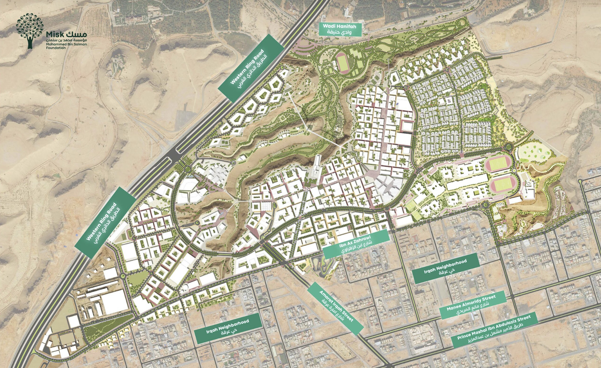

Live Crowd Map
/ الخريطة الحية للحشود
Misk City · مسك سيتي

West Plaza · الساحة الغربية
Heritage Spine · محور التراث
Wadi Trail · وادي حنيفة
Main Stage · المسرح الرئيسي
Inspired by Misk urban fabric · مستلهم من نسيج مسك العمراني
Operator Dashboard
/ لوحة تحكم المنظّم
-32%
Average congestion vs baseline
انخفاض متوسط الازدحام
انخفاض متوسط الازدحام
+24%
Faster arrival time
تسريع وصول الزوار
تسريع وصول الزوار
10 min
Prediction horizon
أفق التنبؤ
أفق التنبؤ
3
Critical hotspots
نقاط حرجة
نقاط حرجة
89%
Visitor flow satisfaction
رضا حركة الزوار
رضا حركة الزوار
West Plaza
Heritage Spine
Wadi Trail
Heritage Spine
Wadi Trail
Visitor Smart Route
/ المسار الذكي للزائر
Choose your current area and destination, and the system suggests the best route
based on live crowd density.
اختر موقعك الحالي ووجهتك، والنظام يقترح أفضل مسار حسب مستوى الازدحام.
AI-based prediction · تنبؤ بالذكاء الاصطناعي
Dynamic rerouting · إعادة توجيه ديناميكية
No personal data · بدون بيانات شخصية